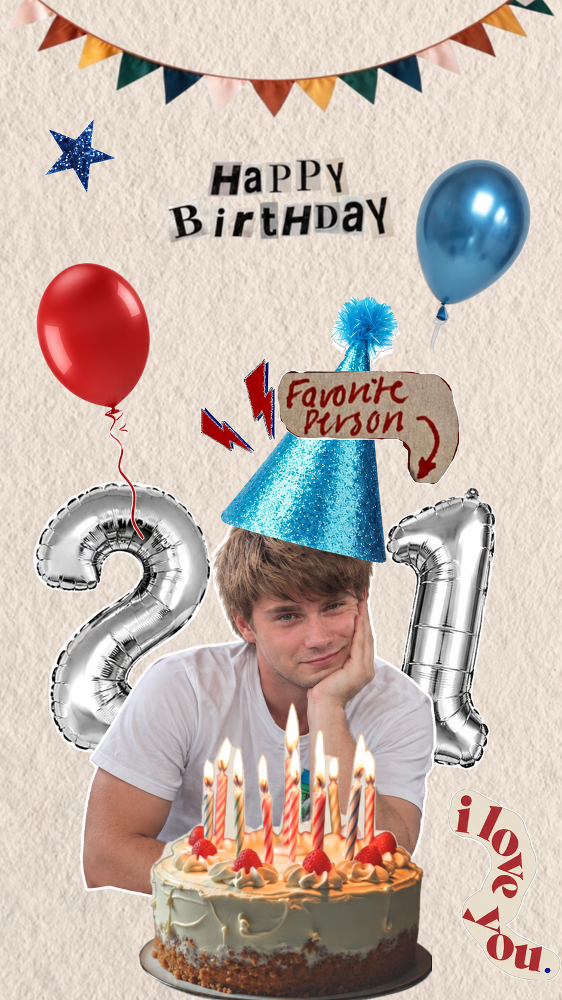

В детстве ты мечтал стать строителем, как твой дедушка. Любимой игрушкой у тебя было Lego. Сейчас ты хорошо разбираешься в играх, учишься программировать, хочешь однажды попробовать делать музыку и видишь своё будущее в IT.
детство Legoсейчас игры + программированиемечта делать музыкубудущее IT + семья

собрано по крупицам
Ты — глазами разных людей
У архива три стороны: ответы твоих друзей, твоей мамы и твои собственные ответы. Формулировки сохранены такими, какими их написали сами близкие.
знакомство · 01
Как вы познакомились?
Где, когда и при каких обстоятельствах началась ваша история?
Когда я учился в своем любимом 10а классе бездельников, мы начали общаться с компанией дебилов, но только один Вадим оказался адекватным.
Познакомились в школе, в 10 классе, когда я встретил этого человека, то понял, что он станет моим другом, хоть он немного и глуповат, зато с ним можно весело провести время.
Когда я перевелся в Лицей в 7 классе, в классе был паренек, который, как мне показалось, в один из первых учебных дней смеялся надо мной. Тогда, затаив обиду, я подумал, что никогда с таким плохим человеком общаться не буду. Пару недель спустя судьба распорядилась иначе. Нас посадили вместе на уроке русского языка. Зинаида Петровна зачитывала словарный диктант, дошла до слова «вареник», и мы с этим пареньком весь урок ржали с этого слова. Этим парнем был — Попов Вадим. С тех самых пор, Вадим является для меня одним из самых лучших друзей, что у меня когда-либо были :)
Впервые Вадима я увидел 1 сентября на встрече с одногруппниками. На фоне остальных он выглядел перспективно в плане общения. Так и заобщались.
Познакомились ещё в первом классе, на линейке стояли вместе, на первой перемене все начали беситься и мы с ним начали беситься вместе, так и бесимся 13 лет вместе.
Я эту морду впервые в 10 классе увидел, я че помню что там было, там скорее чего ток не было
шесть разных стартов одной дружбы
знакомство · 02
Первое впечатление
Каким они увидели тебя при первой встрече — и что изменилось потом?
Он пил много алкоголя и был в дурной компании, мне это очень не нравится, зато сейчас он исправился и стал интеллигентным человеком, который начал общаться с еще более дурной компанией.
Сначала я подумал, что это обычный, ничем не примечательный парень, узнал, что он достаточно образован, сдавал физику и др. технические предметы, а потом он открылся мне, как простой работяга, который умеет радоваться мелочам, человек, который поддержит тебя в трудную минуту и готов предложить свою помощь в любом деле.
Короче, не понравился он мне ужасно, думал, что будь я чуть сильнее и менее стеснительным в то время, то непременно дал бы в нос любителю смеяться. Повторюсь, мне тогда это показалось) Затем мнение изменилось кардинально, Вадим оказался очень добрым, адекватным и, что самое главное, понимающим другом.
Увидел адекватного человека, он узнал песенку Фараона и т. д. В принципе, первое впечатление меня не подвело.
Да я не помню даже, мама рассказывала, что мы на линейке интуитивно вместе встали и начали…
Продолжение ответа не попало на скриншот.
Не ну тупо мясо, вот таким я его увидел потом пообщались, и я понял что тупо ебанутое мясо
первое впечатление иногда очень ошибается
характер · 01
Три прилагательных
Как друзья описывают тебя — серьёзно, смешно и максимально по-своему.
Весёлый, добрый, упрямый. Легко рассмешить, даже с несмешной шуткой. С этим человеком трудно поссориться, ведь он лучше переведёт тему или пошутит. Иногда тяжело переубедить, он верен своему выбору, стилю в одежде, музыке, технике, и будет отстаивать свою точку зрения.
Спокойный, смешной, трудолюбивый.
Дружелюбный, веселый, интересный.
Добрый (хз почему, просто он добрый). Смешной (я же говорю, интуиция! чувство юмора у нас одинаковое, вот и смеемся со всякой х*йни). Комфортик (один из немногих людей, с которыми мне всегда по-настоящему комфортно).
Душевный Юморной doubleRR
портрет из пяти голосов
приколы · 01
Самый смешной случай
Те истории, которые невозможно нормально объяснить людям вне вашей компании.
Сосал банан на гифку.
Мы с Вадимом нахуярились в слюни у меня на хате, смотрели видосы, приколы и уже умирали со смеху, потом он попытался разложить диван, мне с этого смешно стало и я сказал действительно обидную, но на тот момент смешную фразу «Иди об стенку разъебись» ну кароче, просто хорошо провели вечер)
Ситуаций было оооочень много, причем всяких разных. От конфликтной ситуации в Северо-Западном районе, до стягивания с меня шорт в прищепке. Я уверен, что были ситуации смешнее той, про которую я напишу, но сходу не могу вспомнить ещё) В той же прищепке, до того, как Вадим ловким движением рук почти снял с меня шорты, я зашел в спираль для переодевания. И в самый неприятный момент, когда я был в процессе переодевания, какой-то любопытный маленький мальчик подбежал, и решил посмотреть что же у меня там происходит. Увидев маленькую голову, неожиданно высунувшуюся из-под низа спиральки, я был настолько растерян, что единственное, что мне пришло в голову — ударить его ногой, попробовать как-то выгнать. Но, слава богу, до этого не дошло, мама мальчика тут же дернула его обратно. Вадим тогда много смеялся с такой ситуации, да и по сей день, когда мы это вспоминаем, нам очень смешно.
У Вадима на др Лёха нарисовал писюн на пятке Вадима, пока тот прилёт.
Когда он чуть не уплыл, как мамонтенок на льдине, на озере зимой, было смешно, наша любимая история)
Я не помню, но он угарно под трек вайперов на хате у себя танцевал ;)
архив компромата открыт
приколы · 02
Самый безбашенный поступок
Рискованные, глупые и поэтому незабываемые совместные решения.
Пошли в ростикс на последние бабки на карте, этот пидорас ебанный забайтил меня покушать блядский ростик, хотя я и так жирной уебище (он тоже толстый хуесос).
Мы с Вадимом рисовали граффити, а потом вышел сосед, менты проехали и мы убежали. Идея была общая, мне до сих пор стыдно.
Залезли пальцем в распакованный торт в батоне, а потом спиздили Барни. Можно было бы использовать синоним без мата, но в нашей ситуации мы не украли, а именно спиздили маленького Мишку, который отделился от своей стаи и одиноко лежал на полке. Звучит как полная тупость, но это один из лучших дней в моей жизни, тк денег тогда не было вообще, но мне, Вадиму и Кирюхе было очень весело и смешно, вайбово было, реально.
Два сникерса по цене ни одного из Командора в рюкзаке Вадима (Вадим был не в курсе).
Такого наверное не вспомню, но инициировал всякие пакости я обычно, но он тоже хорош, его не надо было особо уговаривать)
Не помню такого, ну не в двоем, мы по его идее тебе в хате хлопушку взорвали ХАХАХХА, это было самое рисковое что мы делали в своей жизни
не повторять, просто хранить в архиве
поддержка · 01
За что тебя ценят как друга
Что ты делаешь такого, за что друзья тебе по-настоящему благодарны?
Ну он вообще ровный челик, может сделать чо угодно. Я к нему обратиться с проблема и он поможет, Вадя общительный чел, еще с ним можно поговорить по душам классно. Короче лев ебать его.
С ним легко общаться, от него хорошая поддержка.
В моем постепенном становлении как личности, я вел себя не очень красиво по отношению к друзьям, за что уже неоднократно извинялся, а так же, пообещал себе, что никогда больше так поступать не буду. То-ли я был маленький и глупый, то-ли просто был не в том возрасте, чтобы должным образом ценить людей, которые меня окружают. Я считаю, что Вадим довольно преданный друг, который поможет, чего бы у меня не случилось, и я в свою очередь, готов поступить точно так же. Он помнит меня ещё с момента, когда я относился к друзьям наплевательски, и остается, повторюсь, одним из лучших моих друзей сейчас, не смотря на то, какие ошибки я допускал раньше. Очень это ценю, правда. Вадим всегда выслушает, всегда сможет помочь, да и просто с ним проводить время всегда классно.
Можно поручить работу и знать что он ее не выполнит.
За пройденный путь вместе, за то что я могу на него положиться, как на друга, да и за то что я…
Продолжение ответа не попало на скриншот.
Душевный чувак и музыку классную слушает
здесь уже почти без приколов
характер · 02
Фирменная фраза
Что ты говоришь настолько часто, что это уже часть личного бренда?
Ставлю жопу.
Ойий хорошая.
Мне больше всего запомнилась «слита дура» ну и естественно, «вареник» с которого нас вынесло ещё будучи детьми.
сосал
Не знаю, тренды меняются, Вадим идет в ногу со временем, фирменной фразы наверное нема.
Ой все, заебало
словарь Вадима, версия друзей
поддержка · 02
Как ты ведёшь себя в трудной ситуации
Когда проблемы у тебя или у друга — что замечают люди рядом?
Ну он постоянно спрашивает советы, что бы посмотреть с другой стороны на проблему, или просто может помощи попросить.
Грусни, нервничает, но старается решить проблему.
Был готов ехать лить лицо какому-то спортсмену, когда было нужно. В тот день я многое понял, кто и как готов мне помочь, если у меня проблемы. Когда я был на грани отчисления, Вадим предлагал мне устроить меня к нему, обещал научить основам, просто чтобы не забрали в армию. В очередной раз скажу: это один из моих лучших друзей. Мне было плохо? Он поможет, поговорит. У меня проблемы? Он готов помочь в решении. У меня все хорошо? Он просто рад за меня.
не справляется
Особо трудностей у нас не возникало, или мы не делились ими (такая вот мужская дружба👯), но я всегда знаю, что я могу написать в тихий омут, и мне помогут.
Психует как маленькая девочка ;)
важнее любой красивой характеристики
приколы · 03
История, которую до сих пор вспоминают и ржут
Шесть разных кандидатов на звание главной легенды архива.
Мы были у Лехи на даче, и это долбоаеб (Вадим) уронил шашлыки на землю это было очень смешно.
У меня на даче мы жарили шашлыки, куски были толстые, поэтому решётка была закрыта не до конца, и Вадим говорит, прикинь если кто-то это все уронит. Так и произошло. Этим человеком был Вадим и мы ели шашлыки с газона.
Ещё в седьмом классе, когда мы шли втроем: я, Вадим, Кирилл. Впереди шла женщина. Дабы сохранить лицо всех участников этой истории, я не буду вдаваться в подробности, кто и что про неё сказал, но если Вадим ВДРУГ прочитает именно этот ответ на вопрос, он поймет. «История про бабку и Кирюху».
Мы часто вспоминали что Вадим приносил поесть, например, черный банан, или, то что до сих пор вызывает у нас улыбку — пропавшая гречка с мандаринками в перемешку.
Оооооййй, ну емае, насколько уже заезжено и не смешно, но как же было смешно тогда, крч пришли мы на озеро зимой после школы, класс 6-7 был, было относительно начало зимы, но озеро уже не плохо промерзло. Мы любили тогда заниматься там всякой хуйнёй, письки огромные рисовать на снегу самого озера, что люди утром выглядывали в окошко, а там елда с их дом). И увидели мы большую такую трещину на краю озера, клинообразной формы. И давай перепрыгивать бл через нее с узкой стороны. Сначала я перепрыгиваю, по щиколотку оказался в воде из-за отколовшегося льда, потом следом прыгнул Вадим, акурат двумя ножками на край. И тут я вижу, как после приземления, вокруг его ног образуется трещина, откалывается и вместе с ним идет ко дну как титаник, так медленно ещё, кинематографично. Ну и я как настоящий друг не побежал его спасать, а начал усыкаться кипятком с этого момент, в итоге успел он выскочить, одна нога была почти по колено мокрая, вторая примерно по щиколотку. Конец 🤓
Я не помню такого, но мне смешно с его компа было постоянно, он его тупо переставил, а мать сгорела хах)
от шашлыков с газона до мамонтёнка на льдине
поддержка · 03
Чему ты их научил
Осознанно или случайно — что друзья унесли из вашей дружбы с собой?
Не ставить жопу.
Программированию от части, не бояться опозориться публично)
Вадим научил меня в первую очередь тому, что нужно ценить людей рядом, которые будут с тобой и за тебя не смотря ни на что. Я уже говорил об этом где-то в других вопросах, но Вадим был со мной в период, когда я вел себя глупо, но он всё ещё тут. Я понял, что таких людей как Вадим мало не только в данный момент моей жизни, но и во всём мире, и когда-то давно, я понял все ошибки, что были допущены, извинился, и пообещал, что не стану больше так поступать со своими искренними, преданными и близкими друзьями.
охранять лоутаб
Наверное он был для меня примером ответственности, целенаправленности и тайм менеджмента, он об этом не знал, но в осознанном возрасте, я понял, что по крайней мере в моих глазах, он знает куда стремится, умеет распределять свое время и свои приоритеты с умом (ну не всегда, но в основном).
2 + 2 = 5 тыщь
иногда влияние видно лучше со стороны
важное · 01
Что друзья хотят сказать тебе прямо сейчас
Последняя страница дружеской части архива — без общего правильного ответа.
Я стану отцом, я бы ему сто проц мог сказать, а это нихуя себе как будто.
Вадим купи компьютер и газ в контен страйк. А вообще не переживай все будет, главное не останавливаться.
Я бы сказал ему, что мы его все очень любим и ценим. Чтобы он не боялся попросить нас о чем-то, я уверен, что мы все готовы ему помочь, чего бы не произошло. Я считаю, что он нереально крут, и я благодарен ему за пример такого друга, которого до него я не встречал.
Рад, что мы тогда начали общаться.
ОПА ОПА, ВЕРНИТЕ СОТКУ ПИДОРЫ
Оставайся собой броу)))
шесть сообщений лично тебе
История его рождения
Как вы узнали, что он появится? Как ждали? Как это было?
Я очень любила его отца и хотела ребенка! Вадим с первых недель появления в животе и до самих родов то и дело подкидывал нам сюрпризы! Я 2 раза лежала с ним на сохранении, было оперативное вмешательство, чтоб не потерять его! За месяц до родов он перестал развиваться, мне ставили капельницы и уколы в живот! К тому же он не смог во время перевернуться в животе, операция была неизбежна! Ждали его, молились, боялись и переживали, что потеряем его! Он родился раньше срока на неделю с весом 2380гр.
Каким он был ребёнком?
Опишите тремя словами.
Красивым, послушным и спокойным!!!
Самая смешная история из его детства
Что он сделал или сказал?
Смешного было много, опишу 2 эпизода! Днем уснули, Вадиму года 3-4, он проснулся, я сплю. Взял ножницы и зачем-то отстриг мне огромную прядь волос! По самый корень! Причем будучи левшой... самыми обычными ножницами(это вообще нереально). У меня на затылке была просто плешь с 5 рублевую монету! Еще он раз немного (да нет, много) испачкал ладошки, когда, простите, вытирал попу и успешно вытер ладошки об кафель в туалете!
За что его ругали чаще всего? И за что хвалили?
За учебу хвалила, ругала за все наверно, на что сейчас бы даже внимание не обратила! Мало хвалила, сейчас до сих пор переживаю об этом!
Какой момент его взросления запомнился вам больше всего?
Начальные классы, волнительно и страшно, ездил в переполненном автобусе, маленький, школа далеко. 11 класс был не менее волнительным, экзамены и самое главное... переход во взрослую жизнь.
Каким вы видите его сейчас? Что в нём осталось от того малыша?
Все! Мягкость характера но при этом огромная сила духа! Терпение и правильная жизненная позиция!
Что бы вы хотели ему сказать, но, может быть, не говорили?
Что очень сильно его люблю! Говорила мало, сейчас казню себя за это! Поддержу его всегда, приму любой его выбор и позицию!
Каким вы его запомнили, когда он был совсем маленьким?
Он был необычайно красивым ребенком, на него все обращали внимание!
Самый тёплый момент, который вы вспоминаете о нём?
Момент, когда первый раз взяла его на руке в роддоме и когда отпускал шарик в небо на своем школьном выпускном, я смотрела на него и видела, как он загадывает желание, он прям шепчет его!!!!
Чему он вас научил?
Упорству!!!!
Что бы вы ему пожелали?
Пожелать хочу ему везения... во всем, в карьере, дружбе, любви!!! Чтоб был счастливее меня а я от этого тоже буду становиться счастливее!!!
детство · 01
Самое раннее воспоминание
Какой момент сохранился самым первым?
«Кушаю в садике»
маленький кадр из самого начала
детство · 02
Любимая игрушка
Какая игрушка была самой любимой?
«Лего»
похоже, собирать мир по деталям нравилось всегда
детство · 04
Кем хотел стать
Кем ты хотел стать, когда вырастешь?
«Строителем. Им на тот момент работал мой дедушка»
первая профессия мечты
детство · 05
Самый смешной случай в школе
История, которую невозможно было придумать специально.
«Когда у меня порвались брюки, и учительница отправила меня в туалет их зашивать (это был 2 класс)»
архив школьных приключений
детство · 07
Самый смелый поступок
Что в детстве требовало настоящей храбрости?
«Когда я признался, что получил 2»
смелость бывает очень разной
о себе · 01
Что пригодилось из школы
Что из школьного опыта реально осталось с тобой?
«Находить нестандартные пути решения»
навык, который действительно пригодился
о себе · 02
В чём ты разбираешься
Что уже получается хорошо, а чему ещё учишься?
«Хорошо разбираюсь в играх. Учусь программировать»
текущая версия героя
о себе · 03
Черта характера
Чем гордишься и что хотел бы исправить?
«Спокойствие. Лень»
коротко и очень точно
о себе · 04
Что делает обычный день счастливым
Что может сделать даже обычный вторник хорошим?
«Если я провожу время с важными мне людьми»
кажется, это один из главных ответов
о себе · 06
Музыка для момента триумфа
Что должно играть, когда всё получилось?
«Мелодия из “Мстители: Финал”»
саундтрек победного кадра
семья · 01
Что значит быть мужчиной
Как ты сам определяешь эту ответственность?
«Обеспечивать свою семью, решать все вопросы и проблемы в семье. Быть опорой для своей семьи»
твоя формулировка опоры
семья · 02
За что благодарен семье
Что для тебя важнее всего в поддержке близких?
«За то, что мне помогают и поддерживают меня в моих начинаниях»
то, что хочется помнить всегда
мы · 01
Наша первая встреча
Каким ты запомнил момент нашей первой встречи?
«Удивился, что она со мной разговаривает»
тот самый первый кадр
мы · 02
Когда понял, что любишь меня
Что происходило внутри в тот момент?
«Я был полон энтузиазма, потому что у меня были целые планы по поводу того, как тебе понравиться. Когда у меня что-то не получалось или общение не складывалось, я очень сильно из-за этого расстраивался»
один из самых личных ответов
мы · 03
Наша общая мечта
Какой ты видишь самую важную мечту для нас?
«Много путешествовать и, несмотря на ссоры, стать счастливой семьёй»
пожалуй, это стоит оставить на виду
будущее · 01
Суперсила
Если бы можно было выбрать одну — какую и почему?
«Путешествовать во времени. Я бы много чего поменял в своей жизни в прошлом»
машина времени пока в разработке
будущее · 02
Страх, который хочется преодолеть
Чего боишься, но хотел бы однажды перестать?
«Перестать бояться будущего и не реализоваться»
страх, который можно превратить в движение
будущее · 03
Через 10 лет
Каким ты видишь себя и свою жизнь?
«Вижу себя на хорошей должности в IT. У меня есть жена и ребёнок, которые меня любят»
спойлер на хорошую главу впереди
будущее · 04
Мечта, которую страшно начать
Что давно хочется попробовать?
«Начать делать музыку»
идея для следующей главы
будущее · 05
На твоём 80-летии
Что хотелось бы услышать о себе от людей?
«Хотел, чтобы мои дети были мне благодарны»
далёкий кадр, который говорит о многом
♥
от меня — про тебя
Ты моими глазами
Небольшая часть нашей истории — в вопросах и моих ответах.
Что ты больше всего любишь в нём?
то, что он всегда готов помочь, всегда будет рядом и поддержит, он очень надежный
Какой ваш совместный момент для тебя самый тёплый?
наши путешествия в Петербург, Калининград - как мы делили 1 сендвич на двоих, когда сидели в аэропорту часов 6, спонтанная поездка в Новосибирск и первый полет заграницу в Тайланд - самый красивый рассвет в 4 утра и слоники, и просто шаурма из шашлычки на улице у автосервиса)
Что бы ты хотела обязательно пережить вместе с ним в будущем?
увидеть весь мир вместе, прожить счастливую жизнь - создать счастливую семью и вместе провести старость
Какая у вас самая смешная общая история?
когда ты ночью зажал меня у стенки и сказал мне "это чтобы защищать тебя и охранять", а на утро ты даже этого не помнил
Если бы он был персонажем фильма или сериала, каким бы он был?
человеком пауком
Каким было твоё первое впечатление о нём?
я часто видела его в школе и всегда знала о его существовании, но с виду он мне казался каким-то нефором и недотрогой
Какой ваш день ты бы с удовольствием прожила ещё раз?
поездку встречать рассвет на Пхукете
Какая фотография из вашей общей коллекции для тебя самая важная и почему?
очень люблю нашу фотосессию в питере и калининграде
Какой момент ваших отношений ты считаешь началом чего-то действительно серьёзного?
когда мы поцеловались на новый год у Ульяны дома
★
кадры из архива
Кадры, которые говорят сами
Серьёзные лица, странные ракурсы, большие приключения и обычные дни, которые почему-то запомнились.
∪
последняя записка
И всё это — только начало
В этих воспоминаниях есть всё сразу: смешные школьные истории, мечта о музыке, желание состояться в IT, много путешествовать и однажды построить счастливую семью. Мне особенно нравится, что даже обычный вторник для тебя становится хорошим, если рядом есть важные люди.